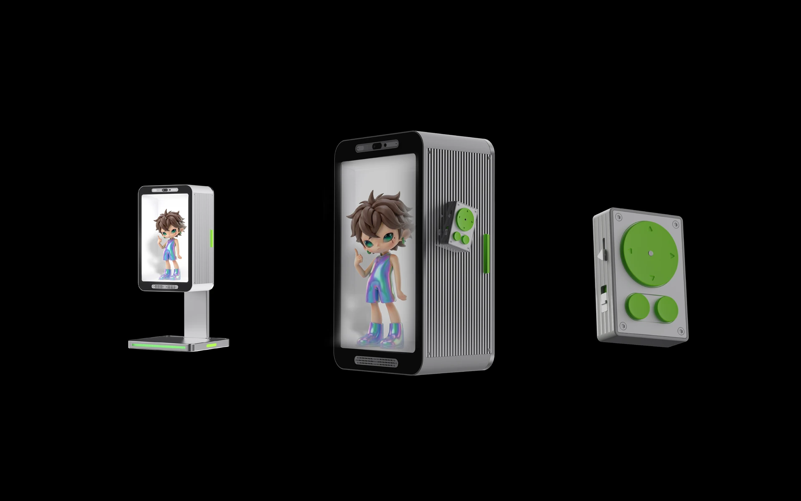
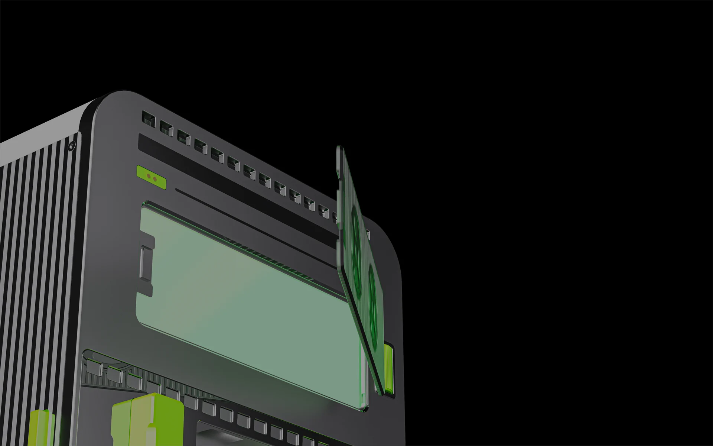
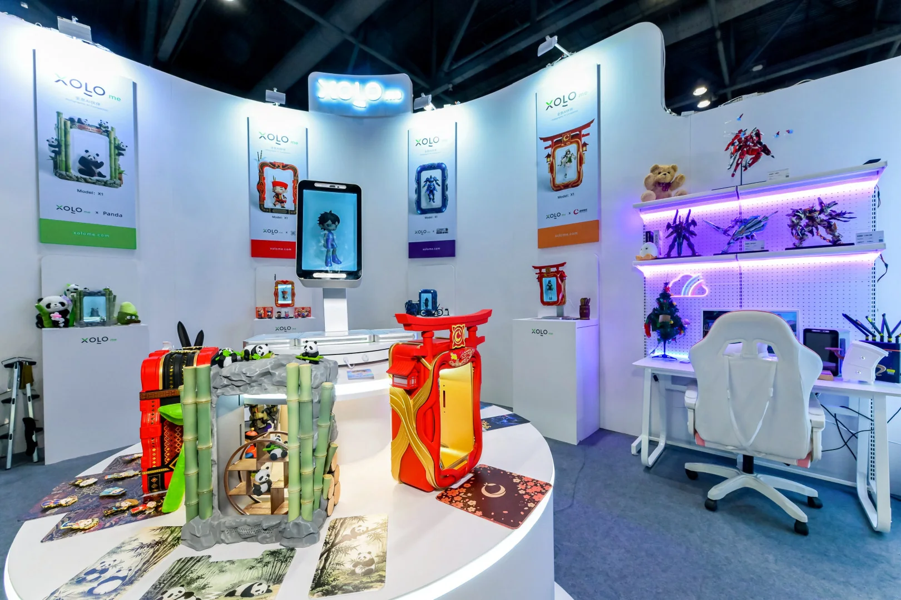
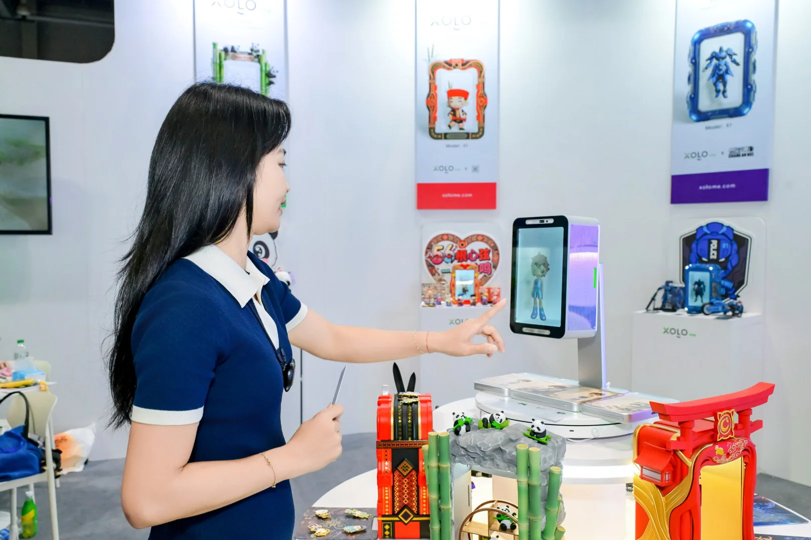
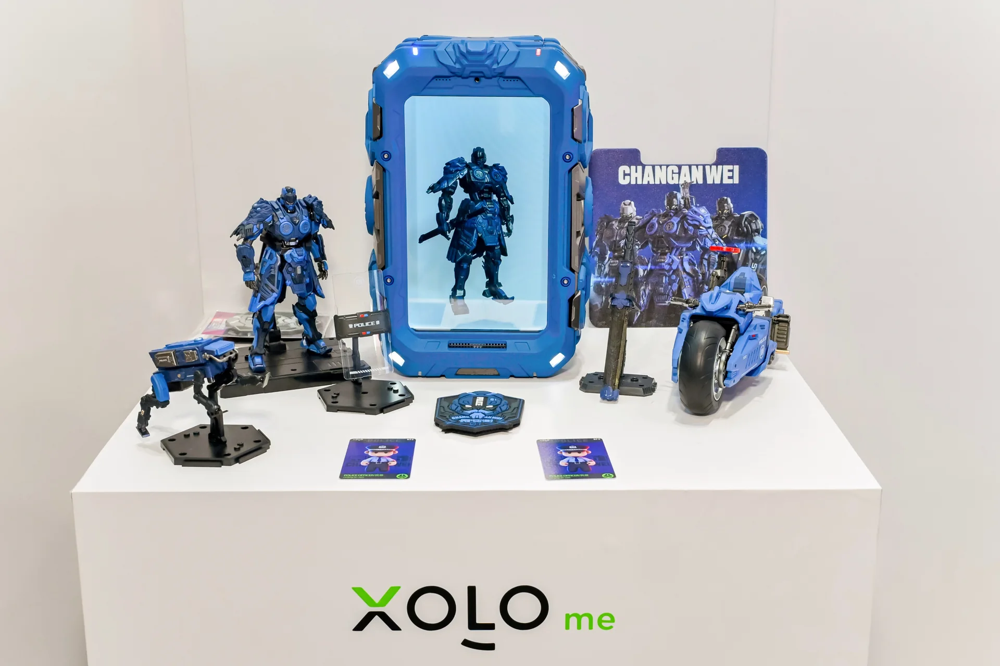

Holographic AI companion
一台设备， 很多种相遇。
XOLOme 把 NFC 实体藏品、可换壳硬件、内容联动与全息 AI 放进同一台设备里，让 IP 不只是被看见，而是被陪伴。
01 / OVERVIEW
为情绪而生， 为生活而造。
年轻人已经为情绪买单。XOLOme 想做的，是把 NFC 实体藏品、可换壳设备和全息 AI 接进同一套关系里， 让收藏、互动与陪伴真正进入日常。
02 / THE X1
THE X1
Designed to evolve
不只是设备， 更是一种关系。
内容不止被播放，也能回应、陪伴并与生活一起生长。



03 / IP COLLECTIVE
长安卫 IP 联名， 让场景先开口。
IP、设备和空间被压成一条连续的视觉叙事。内容不只被看见，也会在真实桌面和生活场景里被记住。
Stories have a new home
本次香港文博会期间，XOLOme 发布了长安卫、民族娃娃、先祖效应等国风 IP 矩阵。 它们不是贴在设备上的装饰，而是能把情绪、文化和日常连接起来的内容层。



04 / COMPANY
技术的意义， 是让复杂变得亲近。
XOLOme 不做只会炫技的显示设备，也不做只有功能的 AI 助手。我们把潮玩的情绪价值、 IP 的叙事能力和 AI 的互动能力放进同一件产品里，让它可以长期待在桌面、客厅和日常里。
从“被拥有、被收藏”到“被互动、被陪伴”，我们更在意关系有没有被真正建立起来。
XOLOme / 2026
把下一次相遇， 留给现实。